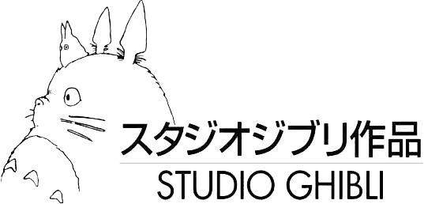

EN
Sign In
The Totoro fabric cushion is made of recycled fabric and hand sewn by the Kyoto fabric workshop. Every stitch and thread is infused with the craftsman's heart, bringing you a unique companionship.
Suitable for winter afternoon reading time, let Totoro accompany you through warm moments
Using Hokkaido century old cherry blossom wood, meticulously carved by a family of three generations of carpenters. Each note carries the craftsman's respect for music and nature.
Suitable for peaceful moments before falling asleep at night, let familiar melodies take you to sleep
Using the traditional technique of Jiugu shao, each tea set undergoes seven rounds of firing by craftsmen. The glaze color inspiration comes from the warm tones of the soup house in the movie, carrying the collection of beautiful memories.
A leisurely afternoon suitable for sharing with close friends, letting the fragrance of tea flow with memories
We don't encourage having a lot, we just hope you genuinely like one thing
— Studio Ghibli Handmade Design Concept
— Crystal
— Sky
— Pink